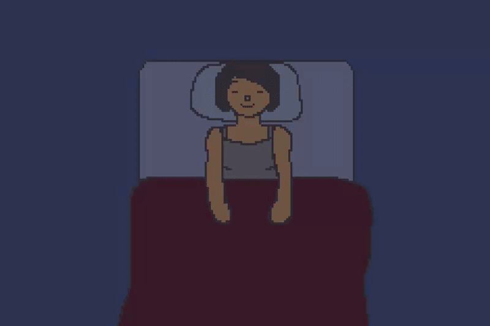

Christina Bui
designer. storyteller. student.

Dotted is a data visualization consisting of an aggregate of images collected by my classmates. An algorithm that averages out the RGB values of each image creates the color of each dot, then the dots are graphed in a 3D plane using their R, G, and B values as the x, y, and z values.
Here's a demo of it.
Here's a demo of it.



harmonious is a visual music piece created in Processing. It is not based on any song in particular, but it is a visual representation of an aspect of music. I chose to depict harmony. The images created in the project are meant to translate the aural sense of harmony to the visual sense.
Have a look at it here.
Have a look at it here.
.png)
Le Cygne Bakery is a made-up business that I created a logo for. I challenged myself by making something out of my comfort zone. Through creating a business that was catered to a very specific audience, I felt as if I had a clear vision of what I wanted to make.
Here's two business cards and a flyer.
Here's two business cards and a flyer.